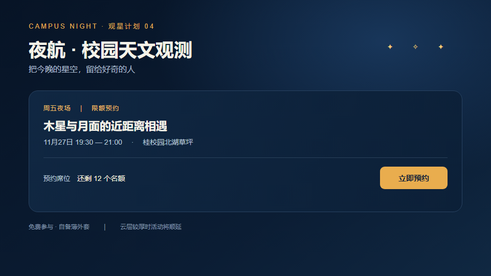
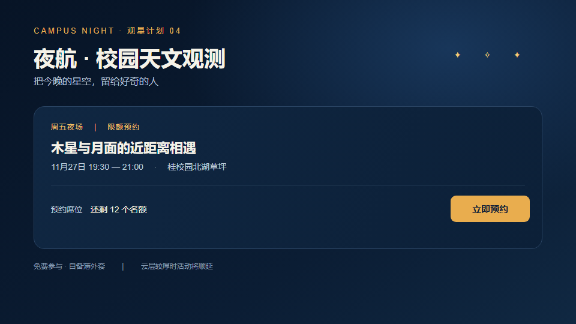

观 星 夜
夜航
校园天文观测
余 1 席周五 20:30–21:30
校园北区观测台
只剩最后一个观测席位。临时断网、切换账号、两人同时报名，你可以在这台预约小程序里亲手试一遍。
也可以先保存备注，刷新页面，再切到另一个账号看看。
本机模拟 · 请勿填写个人信息
周五 20:30–21:30
校园北区观测台
保存草稿或提交一次报名，这里会记录实际结果。
给预约栏样例加入显示故障，对比固定片段的两张截图，定位变动像素。

